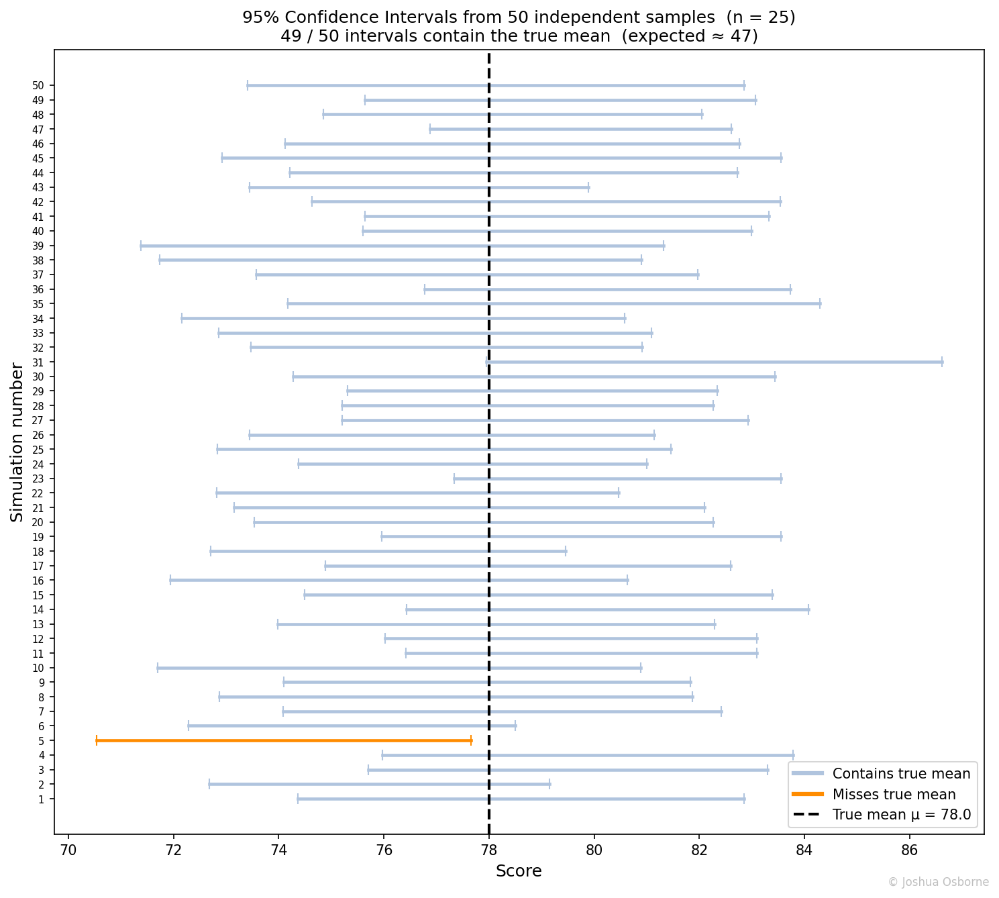

Statistics Notes
A range computed from sample data that, across repeated samples, contains the true parameter at the stated confidence level.
Contents
A confidence interval is a range computed from sample data such that, if the procedure were repeated across many independent samples, the interval would contain the true parameter a specified fraction of the time.
A point estimate such as \(\bar{x} = 78\) communicates nothing about uncertainty. Two studies can produce the same estimate with very different precision depending on sample size and variability. A confidence interval gives both the estimate and its uncertainty into a single interpretable range.
A confidence interval is a lower bound, \(L\), and upper bound, \(U\), computed from the sample, such that the probability that the interval contains true parameter is at least the stated confidence level. The confidence is a property of the procedure: if you were to repeat the study many times and compute a CI each time, the specified percentage of those intervals would contain the true parameter. A single computed interval either contains the true parameter or it does not.
| Symbol | Type | Meaning |
|---|---|---|
| \(\theta\) | scalar | Unknown population parameter |
| \(\bar{x}\) | scalar | Sample mean |
| \(\mu\) | scalar | True population mean |
| \(\sigma\) | scalar | Population standard deviation (assumed known for z-interval) |
| \(s\) | scalar | Sample standard deviation (estimated from data) |
| \(n\) | integer | Sample size |
| \(\alpha\) | scalar \(\in (0,1)\) | Significance level; confidence level is \(1 - \alpha\) |
| \(z_{\alpha/2}\) | scalar | Upper \(\alpha/2\) critical value of the standard normal |
| \(t_{\alpha/2,\, n-1}\) | scalar | Upper \(\alpha/2\) critical value of the t-distribution with \(n-1\) degrees of freedom |
| \(E\) | scalar | Margin of error (half-width of the interval) |
| \([L, U]\) | interval | Lower and upper bounds of the confidence interval |
Case 1: Known \(\sigma\) (z-interval)
\[\bar{x} \pm z_{\alpha/2} \cdot \frac{\sigma}{\sqrt{n}}\]
Common critical values: \(z_{0.025} = 1.960\) (95%), \(z_{0.005} = 2.576\) (99%).
Case 2: Unknown \(\sigma\) (t-interval)
\[\bar{x} \pm t_{\alpha/2,\, n-1} \cdot \frac{s}{\sqrt{n}}\]
The t-interval is wider than the z-interval to account for estimating \(\sigma\) from data. As \(n \to \infty\), \(t_{\alpha/2, n-1} \to z_{\alpha/2}\).
Margin of error:
\[E = z_{\alpha/2} \cdot \frac{\sigma}{\sqrt{n}}\]
Required sample size for a target margin of error \(E\):
\[n = \left\lceil \left(\frac{z_{\alpha/2} \cdot \sigma}{E}\right)^2 \right\rceil\]
Width of the CI:
\[\text{width} = 2E = \frac{2\, z_{\alpha/2} \cdot \sigma}{\sqrt{n}}\]
Width shrinks as \(n\) grows and grows as \(\sigma\) grows.
25 students take an exam. The sample mean is \(\bar{x} = 78\) and the sample standard deviation is \(s = 10\). Construct a 95% confidence interval for the true mean score.
Setup:
Compute: \[E = 2.064 \times \frac{10}{\sqrt{25}} = 2.064 \times 2 = 4.13\]
\[\text{CI} = [78 - 4.13,\; 78 + 4.13] = [73.87,\; 82.13]\]
Correct interpretation: this procedure, applied to many independent samples of size 25, would produce intervals containing the true mean 95% of the time. For this specific interval [73.87, 82.13], the true mean either is or is not inside it.
Imagine running the same study 100 times on different random samples. Each time you compute a 95% CI. About 95 of those 100 intervals will capture the true \(\mu\); about 5 will miss it. You never know whether your single observed interval is among the 95 or the 5.

The width of the interval shows the precision-confidence tradeoff directly:
A 99% CI is wider than a 95% CI for the same data: more confidence requires a wider net.
Doubling \(n\) shrinks the half-width by a factor of \(\sqrt{2}\): precision improves slowly.
The CI and p-value are dual representations of the same evidence. For a two-sided test of \(H_0: \mu = \mu_0\) at level \(\alpha\), rejecting \(H_0\) is equivalent to \(\mu_0\) falling outside the \(100(1 - \alpha)\%\) CI. They cannot disagree: if \(p < \alpha\), the null value is guaranteed to lie outside the CI, and vice versa.
In practice, report both. The p-value gives you the binary decision: reject or not. The CI gives you what the p-value cannot: the direction and magnitude of the effect. A result with \(p = 0.03\) and CI \(= [0.001, 0.15]\) is statistically significant but the effect may be too small to matter practically. A result with \(p = 0.03\) and CI \(= [12.4, 31.6]\) points to a large, meaningful effect. The p-value alone cannot tell these apart.
“There is a 95% probability the true mean is in this specific interval.” Once computed, \(\mu\) is either inside [73.87, 82.13] or outside it. The 95% is a property of the procedure across many repetitions, not of the probability that \(\mu\) is in any particular interval. The Bayesian counterpart that does make this statement is the Credible Interval.
“95% of the data falls in the CI.” That describes a prediction interval, which is always wider. A CI covers the parameter, not individual observations.
“A wider CI means a worse study.” A wider CI can reflect small sample size or high variability.
“Overlapping CIs mean no significant difference.” Two 95% CIs for two means can overlap while a direct test of their difference is significant. The test for a difference uses the standard error of the difference, which is not the same as comparing two individual intervals.
“The CI and the p-value always agree.” Only for a two-sided test: \(\mu_0 \notin \text{CI}_{1-\alpha}\) if and only if \(p < \alpha\). For one-sided tests and more complex hypotheses, the equivalence does not always hold.
p-value, t-test, Standard Error, Credible Interval, What is Hypothesis Testing